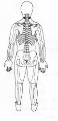
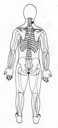

Travas de Segurança da Energia 12 - Segunda Profundidade
|
 |
TSE 12 Seja feita a Tua Vontade e não a minha. Restabelece o equilíbrio emocional e elimina a raiva. Alivia a tensão do pescoço e dos braços. ¬ Colocar a mão na parte posterior do pescoço entre o crânio e os ombros TSE 12. ou
M.e. sobre lado direito do pescoço entre o crânio e o ombro TSE 12. ®
M.d. sobre a base da coluna, no cóccix. ®
|
 |
Notas:1 - M.d. = mão direita M.e. = mão esquerda.2 - O texto sublinhado indica que pode ser feito usando alternadamente o lado direito (mão direita) e depois o lado esquerdo (mão esquerda). 3 - Tocar a área indicada, com a ponta dos dedos da mão, durante alguns minutos ou até sentir uma pulsação rítmica. Não precisamos nos preocupar em demasia com a precisão da área indicada, pois cada trava de segurança da energia tem uma abragência de uns sete centímetros em torno de si.